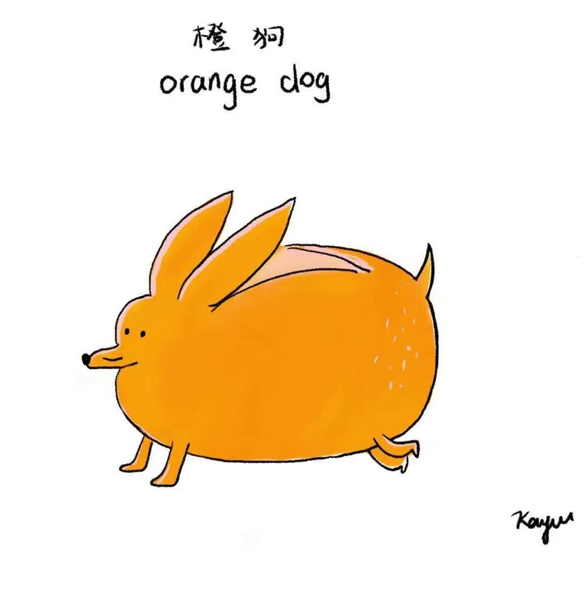

|
Jiangrui Yu
I am a Ph.D. candidate jointly affiliated with the School of Integrated Circuits and the Institute for Artificial Intelligence at Peking University, advised by Prof. Meng Li. My research lies at the intersection of cryptography, computer systems, and specialized hardware, with a focus on efficient and secure computing.
My work focuses on making privacy-preserving computation practical, particularly through fully homomorphic encryption. I explore cross-layer co-design spanning cryptographic algorithms, numerical methods, high-performance software, GPU kernels, and hardware architectures, with the goal of building efficient systems for encrypted machine learning and other data-intensive applications.
Google Scholar /
GitHub /
ORCID /
LinkedIn /
DBLP
|

|
|
Education
Ph.D. Candidate in Integrated Circuit Science and Engineering
School of Integrated Circuits and Institute for Artificial Intelligence, Peking University, 2024–Present
B.Sc. in Applied Physics
School of Electronic Engineering and Computer Science, Peking University, 2020–2024
Dual Degree: Computer Science and Technology
|
|
Research Interests
I work at the intersection of cryptographic computing, computer systems, and specialized hardware. My goal is to reduce the gap between the strong security guarantees of homomorphic encryption and the performance required by practical applications.
- Homomorphic Encryption: programmable bootstrapping, encrypted lookup tables, scheme conversion, and numerical function evaluation.
- Systems and Acceleration: GPU kernels, high-performance cryptographic software, and specialized architectures.
- Privacy-Preserving Machine Learning: efficient encrypted inference and cross-layer algorithm-system co-design.
|
News
- [Jul. 2026] [Paper] Our paper ROSETTA was accepted to ACM CCS 2026.
- [Jul. 2026] [Paper] Our paper OptiPrime was accepted to IEEE/ACM MICRO 2026.
- [Jul. 2026] [Award] Received the Noteworthy Reviewer Recognition from the USENIX Security 2026 Artifact Evaluation Committee (33/222 AEC members).
- [Mar. 2026] [Research] Extended the segmented LUT evaluator with dual-input batch evaluation and parameter validation.
- [Nov. 2025] [Project] Completed convolution and ReLU test infrastructure for BatchPBS-CNN.
|
|
Publications (* Equal contribution)
|
|
ROSETTA
|
ROSETTA: Efficient and Accurate Privacy-Preserving LLM Decoding via Hybrid CKKS/TFHE Evaluation
Jiangrui Yu, Baosheng Zhang, Liang Kong, Lin Ding, Yi Chen, Ye Yu, Mingzhe Zhang, Meng Li
ACM SIGSAC Conference on Computer and Communications Security (CCS), 2026
A hybrid CKKS/TFHE framework for efficient and accurate privacy-preserving LLM decoding, combining segmented lookup tables with scheme-aware operator selection.
|
|
OptiPrime
|
OptiPrime: Optimizing Private Inference through Protocol-Hardware Co-Design
Jiangrui Yu, Ye Yu, Si Chen, Chenqi Lin, Wenxuan Zeng, Junfeng Fan, Mingyu Gao, Meng Li
IEEE/ACM International Symposium on Microarchitecture (MICRO), 2026
A protocol-hardware co-design framework for efficient private inference.
|
|
PEFT
|
PEFT: A Near-Memory Processing-Enabled Heterogeneous Accelerator for BatchPBS TFHE
Jiangrui Yu, Yi Chen, Meng Li
IEEE International Symposium on Circuits and Systems (ISCAS), 2026
[Paper]
A near-memory heterogeneous accelerator for efficient BatchPBS execution in TFHE.
|
|
BLB
|
Breaking the Layer Barrier: Remodeling Private Transformer Inference with Hybrid CKKS and MPC
Tianshi Xu*, Wen-jie Lu*, Jiangrui Yu*, Yi Chen, Chenqi Lin, Runsheng Wang, Meng Li
34th USENIX Security Symposium, 2025
[Paper] [arXiv]
A hybrid CKKS and MPC system for efficient private Transformer inference.
|
|
FlexHE
|
FlexHE: A Flexible Kernel Generation Framework for Homomorphic Encryption-Based Private Inference
Jiangrui Yu, Wenxuan Zeng, Tianshi Xu, Renze Chen, Yun (Eric) Liang, Runsheng Wang, Ru Huang, Meng Li
IEEE/ACM International Conference on Computer-Aided Design (ICCAD), 2024
[Paper]
A flexible kernel-generation framework for automating and optimizing homomorphic-encryption-based private inference.
|
|
Trinity
|
Trinity: A General Purpose FHE Accelerator
Xianglong Deng, Shengyu Fan, Zhicheng Hu, Zhuoyu Tian, Zihao Yang, Jiangrui Yu, Dingyuan Cao, Dan Meng, Rui Hou, Meng Li, Qian Lou, Mingzhe Zhang
57th IEEE/ACM International Symposium on Microarchitecture (MICRO), 2024
[Paper] [arXiv]
A unified accelerator architecture supporting CKKS, TFHE, and conversion between arithmetic and logic FHE schemes.
|
Honors and Awards
- Noteworthy Reviewer Recognition (33/222 AEC members), USENIX Security 2026, Jul. 2026.
- DACS Industry Contribution Award, Peking University, Dec. 2024.
- Outstanding Graduate, Peking University and Beijing, Jul. 2024.
- National Scholarship (top 0.2%), Sep. 2023.
- Canon Scholarship, Sep. 2022.
- Lihuirong Scholarship, Sep. 2021.
- Merit Student, 2021–2023.
|
Selected Talks
- [Month Year] "Talk title," venue, location. [slides]
|
Teaching
- [Term Year] Course role, Course title, Institution.
|
|
{kind=link}